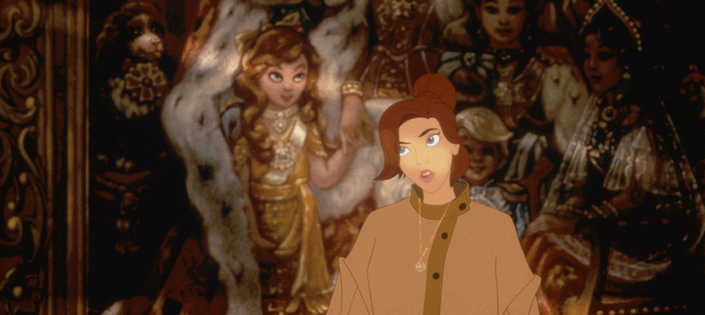

About Anastasia
Anastasia grew up in an orphanage but is desperate for some answers regarding her past and who she really is -- which is that she is, in fact, the missing princess of the Romanov family who was separated from her family during the war. Rasputin has been after her eversince he found out she was still alive, without her knowing that she is in fact the royal heir of Russia. (Edit this after you check a bit more hehe)
Anastasia in front of her family's portrait
Anastasia's Characteristics
- She is the missing princess of the Romanov family
- She befriends a puppy on her journey who she names Pooka
- She is great at singing and is my favourite princess
Anastasia's Friends
Like I mentioned earlier, Anastasia meets Pooka along her "journey to the past", but also meets Dimitri, Vladimir, and his "friend" Sophie, who is actually the cousin of the Dowager Empress -- Anya's grandmother, all of whom helped her along her journey to finding out who she really is. Click on the links below to learn more about them!